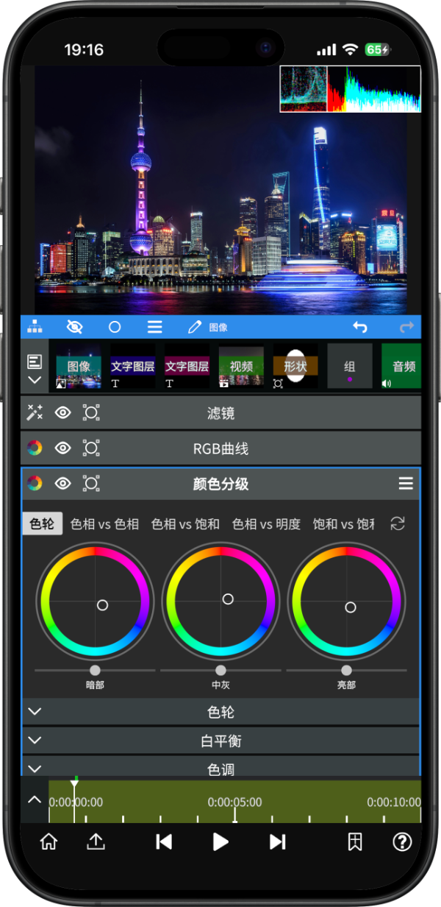

NodeVideo 手机剪辑从零到丝滑慢动作：实战全流程
带读者从零上手 NodeVideo：项目新建、素材导入、关键帧动画、光流补帧慢动作、自定义 LUT 调色到最终导出，附新手最容易翻车的三个卡点解法。
这篇教程结束时，你能用 NodeVideo 在手机上从零剪出一支带丝滑慢动作、自定义调色的短视频——不需要电脑，也不需要付费会员。
准备：你需要什么
先确认三样东西：
- 版本：NodeVideo 9.0 或更高版本（9.0 对关键帧曲线和光流补帧做了大升级）
- 平台：安卓手机或 iPhone 均可，两者界面基本一致；PC 版操作逻辑也相通
- 素材：一段手机拍的运动画面（比如跑步、弹跳、快速挥动的物体）——光线稳定、运动方向明确的素材补帧效果最好
从nodevideo官网能直接拿到最新版，安装包走下载入口就行，别从第三方市场下载，版本老会少不少功能。
第一步：新建项目与比例设置
打开 NodeVideo，首页点新建项目。
弹出的项目设置面板里，先选比例：竖屏短视频选 9:16，横屏创作选 16:9，方形社交平台用 1:1。然后把预览帧率调到 30fps——这一步很关键，能大幅降低预览时的卡顿感，导出时再改回高帧率就行。预览质量默认是 50%，新手别改它，改了只会让手机更卡，导出画质一点不受影响。
设置完点确认，时间线和素材面板就会铺开。
第二步：导入素材与时间线剪辑
时间线底部有个加号，点它可以从手机相册、文件管理器或 NodeVideo 自带的素材库导入。选你准备好的运动视频。
素材拖进时间线后，先做两件事：
- 选入点和出点：时间轴上按住素材片段的左端或右端，左右拖动就能裁掉开头结尾没用的部分。比如运动主体从第 2 秒开始进入画面，就把素材左端拖到 2 秒处。
- 剪成多段：把播放指针（白色竖线）移到你想切的位置，点时间线工具栏里的剪刀图标，素材就会被分成两段。做慢动作的时候，我们只给其中一段补帧，这样手机不会整体变慢。
到这一步，你的时间线上应该只有一段 3~5 秒的运动镜头——够了，太长会拖慢后续所有操作。
第三步：关键帧做一个简单动画
给片段加个入场缩放，让视频不那么单调。
选中时间线上的那段视频，底部面板切到属性，找到缩放 Scale 属性。把播放指针移到片段最开头，点 Scale 旁边的菱形图标加一个关键帧，把数值调到 80%——画面会稍微缩小一点。然后把播放指针移到片段第 1 秒处，再加一个关键帧，把 Scale 调到 100%。
现在从头播放，你会看到画面从 80% 平滑放大到 100%。两个关键帧之间的插值 NodeVideo 默认就处理好了，不用手动调曲线。等你把基础流程玩熟了，再去碰曲线编辑器调缓动就行。
第四步：光流补帧做丝滑慢动作
这是 NodeVideo 的招牌功能，也是今天的重点。
选中你要做慢动作的那段视频（如果之前没剪开，先用剪刀切出来）。点片段上方的图层菜单（三条横杠的图标），往下翻找到补帧，选里面的光流。保持默认参数不动，先返回时间线。
现在对这段素材做变速：选中后在属性面板找速度，调到 0.2x（也就是慢放五倍）。播放看看——如果素材质量够好，你会看到运动物体的每个动作都被均匀插值，没有传统抽帧慢动作那种跳帧感。
这里要注意：时间轴预览时补帧质量被刻意压低了，你可能看到果冻纹或模糊，这不是最终效果。导出之后才是真实渲染结果，耐心点。如果导出后还是有明显果冻，多半是素材本身光线太暗或者有重复帧——回去补帧参数里把去重复帧打开再试。

第五步：调色——导入自定义 LUT
最后给视频加个电影感滤镜。NodeVideo 支持直接导入 .cube 格式的 LUT 文件，Photoshop、Lightroom、达芬奇导出的都能直接用。
操作路径：选中视频 → 属性面板 → 添加属性 → 颜色校正 → 滤镜(新)。弹出滤镜面板后选自定义，点红色加号，从手机里挑一个你事先存好的 .cube 文件。可以一次多选，逐个预览找到喜欢的效果。
网上搜"免费 LUT"能找到海量资源，挑一个色调不太重的先用——LUT 太浓会让画面过饱和，后面还得用 RGB 曲线局部拉回来，调色曲线的具体调法可以去nodevideo文档翻一下。
第六步：导出
回到项目设置，把帧率改回你想要的最终值（60fps 对应手机高帧率拍摄的素材），预览质量不用管它。点右上角的导出，选分辨率和码率，等进度条走完就行。
三个新手最容易翻车的卡点
卡点一：预览卡得像幻灯片。八成是素材太大会直接塞进来了——别硬扛，选中素材 → 图层菜单 → 其它 → 信息，看看分辨率是不是超过 1080p。是的话先在电脑或手机端压缩一下，再导进来。另外确认预览帧率在 30fps 以下、预览质量 50%，这两个设置对流畅度影响极大。
卡点二：补帧出来果冻感严重。先排除素材问题：光线昏暗、运动方向突变、画面有大面积重复纹理的素材，补帧质量天生会打折扣。换一段光线稳定、主体运动方向明确的素材试试。如果素材没问题，回去图层菜单的补帧参数里，把去重复帧选项打开——它会自动检测并跳过重复帧，对解决果冻有直接帮助。
卡点三：LUT 文件选了但没效果。最常见的原因是文件格式不对。NodeVideo 只认 .cube 后缀的 LUT，如果你手里是 .3dl、.lut、.xmp 之类的格式，先在电脑端用调色软件导出成 .cube 再传手机。检查一下文件是不是真的存到了手机本地目录里，别存在云端网盘里没下载下来。
往下还能玩什么
把今天的流程摸熟之后，可以试试运动跟踪（让字幕跟着视频里的物体一起动）、音频反应器（让画面跟着音乐节拍跳动）、或者用钢笔工具做局部调色蒙版——NodeVideo 9.0 加的迷你脚本表达式也值得研究，能用几行代码驱动属性做程序化动画。
这套剪辑工作流的完整资料在几个开源仓库都能拿到——最新版本更新以GitHub为准，国内网络不方便直连的话可以去Gitee或GitCode这两个镜像源，搜 APP/nodevideo 目录就能找到 .cube 滤镜示例、补帧参数参考和调色曲线预设，适合入门之后继续深挖。